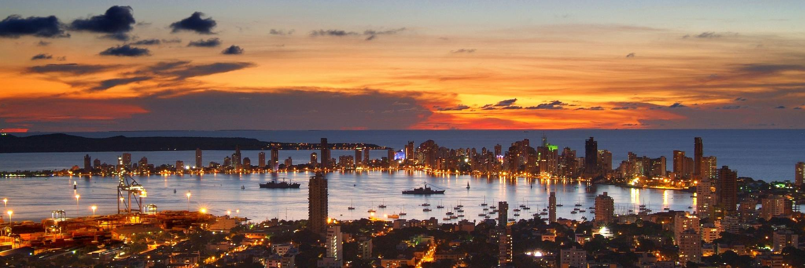
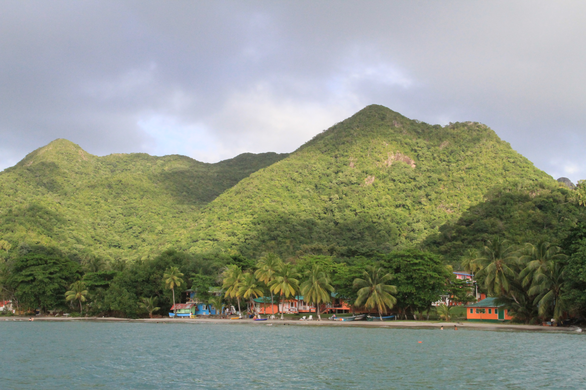
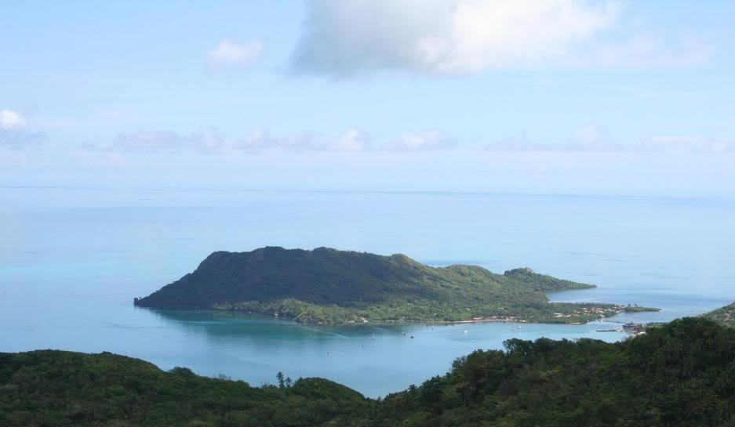
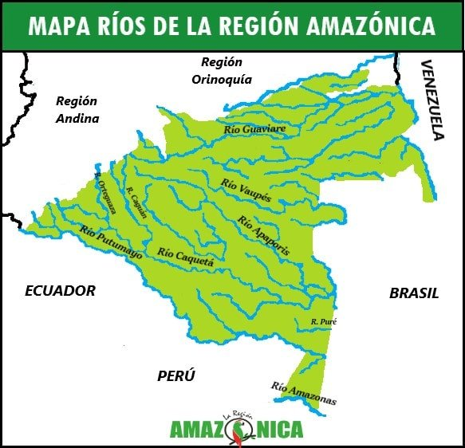
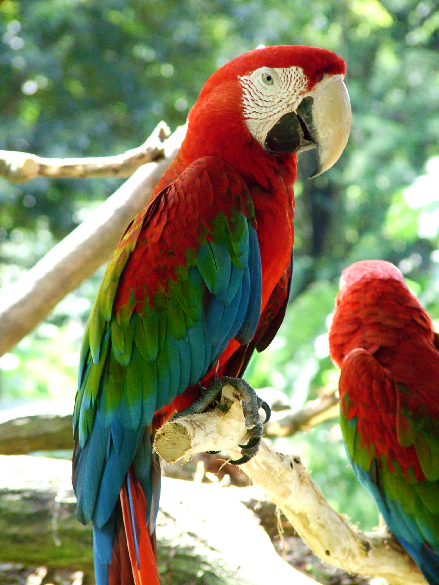
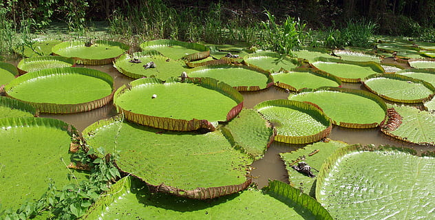

.png)
Lugares Turísticos
Colombia es un país situado en un buen lugar geográficamente, por ejemplo
siendo el único país sudamericano
en tener salida a dos océanos
diferentes por esto su diversidad es abundante y esto se ve reflejado en
lugares turísticos como:
Cartagena:
Cartagena de Indias es una ciudad colombiana ubicada en la costa caribeña del país. Su casco histórico, declarado Patrimonio de la Humanidad por la UNESCO, es un lugar ideal para explorar la rica historia y cultura de la ciudad. Además, cuenta con hermosas playas como Playa Blanca, Isla Barú y Bocagrande, ideales para disfrutar del mar Caribe y deportes acuáticos. Además, es un buen lugar para hacer compras y tiene una animada vida nocturna. En resumen, Cartagena de Indias es una ciudad con una amplia oferta turística y una visita obligada para cualquier viajero que visite Colombia.
Medellín:
Es probablemente una de la ciudades más conocidas de Colombia en el exterior, por sus pros y sus contra. Sobre todo su reconocimiento viene de grandes famosos de la ciudad, como los cantantes:
- J Balvin
- Juanes
- Karol G
- Maluma
También un poco de su reconocimiento se debe a la popularidad de algunas series de televisión, como:
- La reina del Flow
- El patrón del mal
- Narcos
- Sin senos si hay paraíso
Aparte de esa popularidad, Medellín es una de las ciudades más importantes del país. Siendo la segunda ciudad más poblada y con mayor crecimiento y modernización.
San Andres:
Es probablemente el archipiélago más conocido de Colombia. Es una increíble isla caribeña, esencial lugar para pasar unos días de vacaciones. destaca por la claridad del mar y por sus bonitas playas. Otras de las islas caribeñas colombianas son:
- Providencia 
- Santa Catalina 
- Cayo Cangrejo
.jpg)
Amazonas:
Por supuesto, en lugares turísticos de Colombia no podía faltar una de las mayores maravillas que tiene. El Amazonas (una parte de ella), donde se encuentra mucha diversidad de fauna y flora, e ir a visitar sería sin duda indispensable para alguien que quiere ir de turista al país.
Las cosas destacables de este territorio son variadas, como por ejemplo:
- Hidrografía 
- Fauna 
- Flora 
Como podemos ver en este país hay mucha diversidad de destinos diferentes, desde naturaleza pura hasta Ciudades Urbanizada
Artículos ordenados alfabéticamente